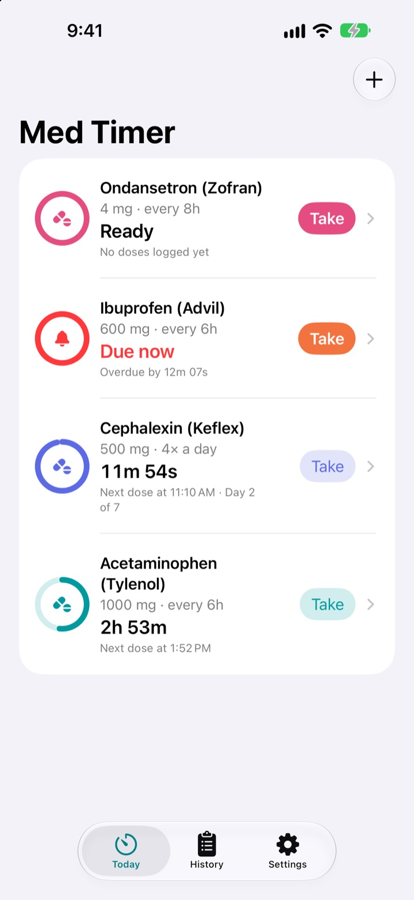
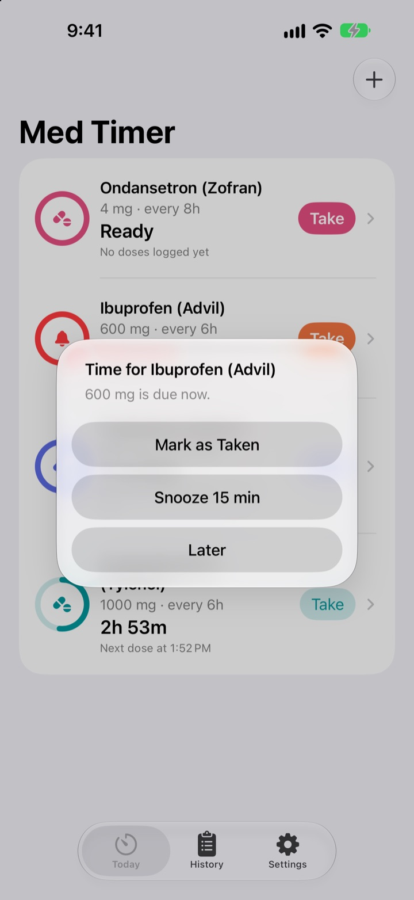
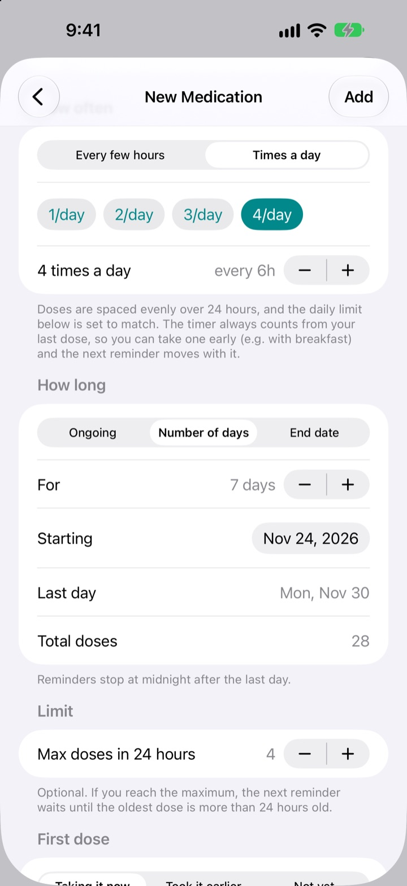
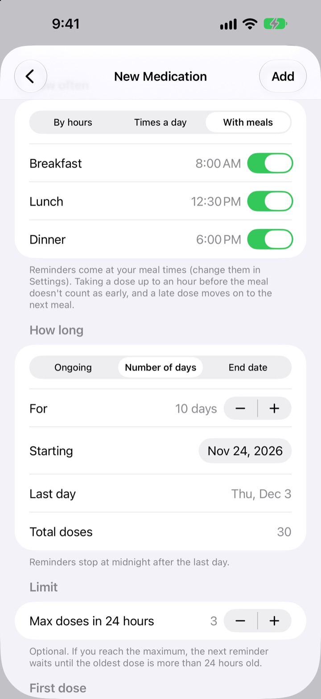
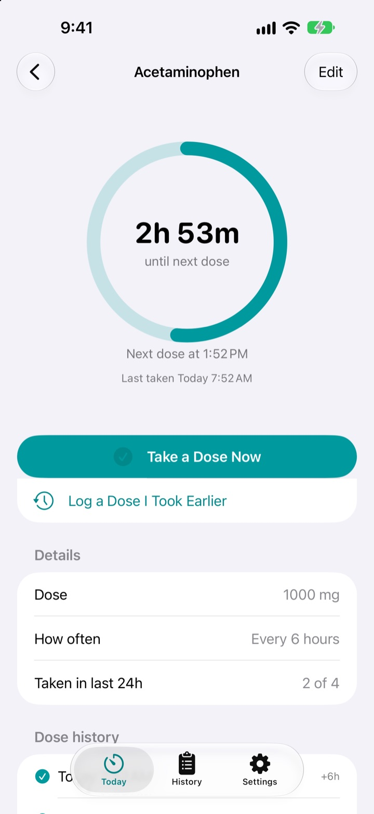
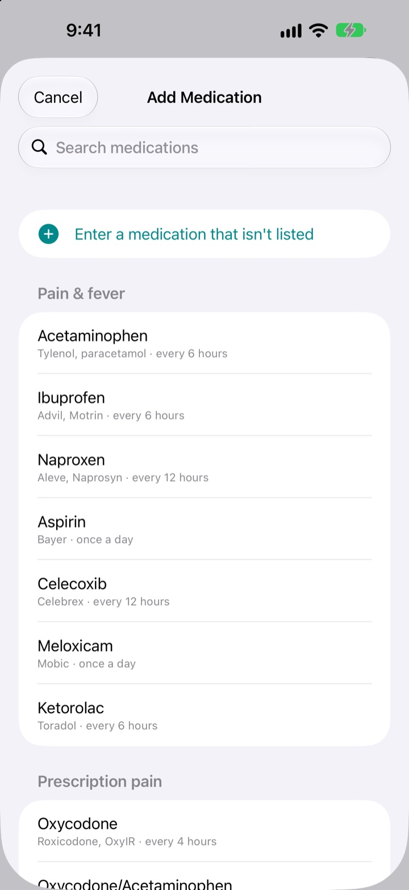
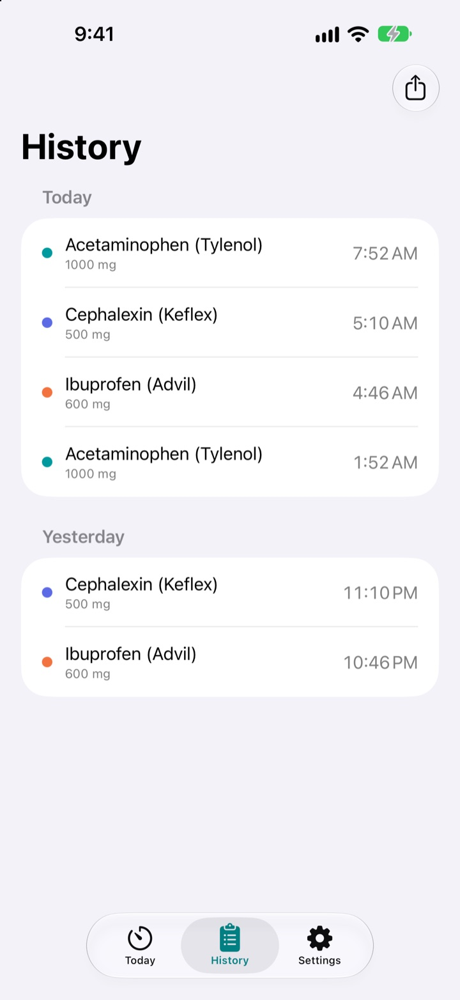

Your next dose, counted down.
Recovering from surgery, or halfway through a course of antibiotics? Tap Take when you take a dose. Med Timer shows how long until the next one, and reminds you when it's due.
Try it. This card works like the one in the app.
Four medicines, four schedules, one bag from the pharmacy.
The week after an operation usually comes with a handful of prescriptions, each on its own timetable, at a time when you're tired, sore and not sleeping well. It's easy to lose track of what you took and when.
Med Timer is made for exactly that. Each medicine gets its own countdown, set up the way the label says. When the course is over, it stops reminding you.
- Oxycodone5 mg Every 4 hours as needed. Counts down from each dose you take.
- Cephalexin500 mg 4 times a day for 7 days. Every 6 hours, shows “Day 2 of 7”, ends on its own.
- Docusate100 mg With breakfast and dinner. Reminds you at your meal times.
- Ibuprofen2 × 400 mg Every 6 hours, no more than 4 a day. 2× dose button and a daily limit check.
Set up in under a minute.
No account, nothing to configure first. Open the app and add what's in the bag.
Add a medicine
Search 60+ common medicines by generic or brand name, or type your own. Pick the dose and how often, straight from the label.
Tap Take
Its countdown starts. Took it a while ago? Log the time you actually took it.
Get reminded
When the next dose is due, a reminder pops up even if the app is closed. Mark it taken or snooze it from the notification.
What's inside
Swipe or scroll for more.







Nothing leaves your phone.
Med Timer has no account, no servers, no ads and no analytics. Your medicines and doses are saved on your device, and reminders are scheduled by your device. Read the privacy policy.
- No sign-upOpen it and start. There's nothing to log in to.
- No trackingNo analytics, advertising or third-party code. The App Store lists it as Data Not Collected.
- Reminders that work offlineNotifications are scheduled on the device and never pass through a server.
- Yours to deleteErase everything from Settings in the app, or just delete the app.